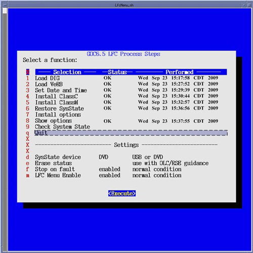
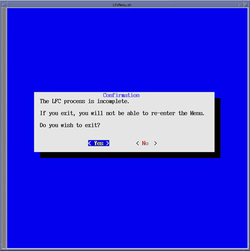

Then select [Execute], the LFC Menu will check that the minimum procedural steps required for a LFC have been completed.
If all LFC Menu selections have been completed, the LFC Menu will terminate.
If some of the LFC Menu selections have been skipped, a pop-up window will appear confirming LFC Status.
Click [Yes] if satisfied that all necessary LFC Menu selections have been completed.
Illustration 31: LFC Menu - Quit Selection

Illustration 32: LFC Menu Quit Execution Confirmation Window

| NOTE: | The “LFC process is incomplete” message in
the LFC Menu Quit Execution Window appears whenever a LFC Menu selection
has been skipped. Not all selections require execution. This execution
check is only meant to confirm the User's desire to terminate the
LFC Menu when selection have not been executed. Selecting this menu item will terminate the LFC Menu. Only select this menu selection once all steps have been completed. Once the LFC Menu is turned off (either by confirming the “Quit” Process selection or by disabling the LFC Menu in the LFC Menu Settings), it will remain disabled. To turn the LFC Menu back on will require the following command string to be entered in a Linux Terminal windows: Open a Terminal Window, and log on a root. Type: [root@hostname] /usr/g/scripts/LFC/startLfcMenu.sh[ENTER] |